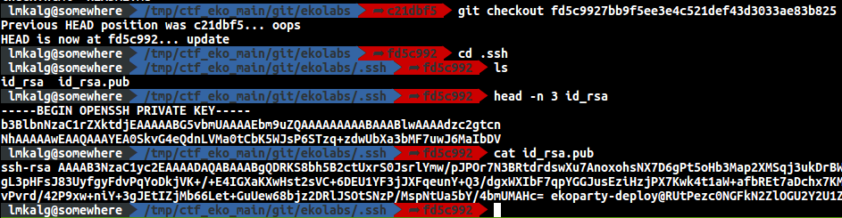

Challenge Data
- Name: Leak
- Category: Git
- Points: 317/500
Solution
Unfortunately, by the time I’m writing this writeup, both repositories were not longer available.
The challenge started by pointing you out to a repository. After doing a clone I began to analyze the repo.
I started the anlysis by inspecting the commits and its messages, by executing a git log:
The message of commit c21... seemed to be interesting so I executed a diff against the previous one:
$>git diff fd5c9927bb9f5ee3e4c521def43d3033ae83b825 c21dbf5185a4dbdb5b2bd2f3d1d3b266c3a2271e
The answer was:
Nice! Seemes that a ssh private key was removed. I tried to recover it:
$> git checkout fd5c9927bb9f5ee3e4c521def43d3033ae83b825
$> cd .ssh/
$> head -n 3 id_rsa
$> cat id_rsa.pub

That public key had something weird. Usually the last part of it is just a reference (optional) to the user@host where the private key lives. However, that host seemed weird. In fact, seems to be base64 encoded.
$> echo RUtPezc0NGFkN2ZlOGU2Y2U1ZTg4NWFkMjRlZWYyNDNiMWZkMTFkMGZiN2V9 | base64 -d
EKO{744ad7fe8e6ce5e885ad24eef243b1fd11d0fb7e}